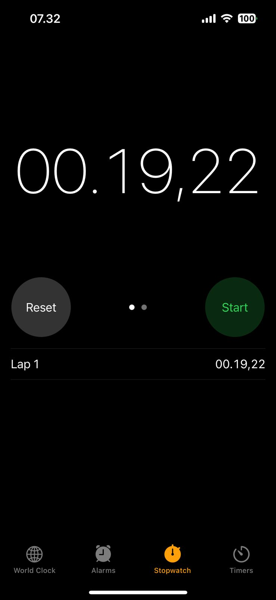

Niche: Product Ad Photography for small businesses and entrepreneurs.
The niche was chosen deliberately, not arbitrarily. Small business owners frequently need professional product photos — for online stores, social media ads, and pitch decks — but a proper product photography session costs hundreds of dollars and requires scheduling, a photographer, and post-processing. Viscraft eliminates all of that.
This is meaningfully different from a generic AI art generator. The entire product is shaped around the constraints and expectations of commercial product photography:
buildPrompt()) outputs prompts in a format that AI image models are trained to interpret as product photography: "Commercial product photography, high resolution, sharp focus on product, no watermark, no extra text."The niche shaped every product decision, from naming (campaigns, ad shots) to the prompt options table schema (category, label, promptValue, sortOrder), to the default suffix appended to every generated prompt.
A detailed trace of how a user's prompt travels from the browser through the backend to the AI API and back as a rendered image.
buildPrompt() assembles the structured prompt from the user's product description and selected styling options in real-time. The user sees the assembled prompt in a preview pane before submitting.{projectId, prompt, generatedPrompt, referenceSceneId?, uploadedReferenceImage?}userId from the token. The handler binds the JSON body and passes it to SceneService.Generate().order_index, then calls repository.InsertProcessing().// From service/sceneService.go
sceneId, err := s.repository.InsertProcessing(userId, req, orderIndex)
if err != nil {
return response.GenerateSceneResponse{}, &constant.ErrDatabaseFailed
}
generatedPrompt := req.Prompt
if req.GeneratedPrompt != "" {
generatedPrompt = req.GeneratedPrompt
}
go s.processGeneration(requestId, sceneId, generatedPrompt, referenceImageBytes)
status: "processing" — before any AI call is made. The client now has a scene ID to poll against.processGeneration() runs concurrently. It decides which Pollinations endpoint to call based on whether a reference image was provided, then sets a context deadline (60s for text-only, 90s with reference).// From pkg/imagegen/client.go
func (c *Client) Generate(ctx context.Context, prompt string, referenceImage []byte) ([]byte, error) {
if referenceImage == nil {
return c.generateTextOnly(ctx, prompt)
}
return c.generateWithReference(ctx, prompt, referenceImage)
}
// Text-to-image: GET request
endpoint := pollinationsImageURL + "/" + url.PathEscape(prompt) + "?model=kontext&nologo=true"
// Image-editing: POST multipart
// Fields: prompt, model=kontext
// File: image (reference PNG)
./storage/images/{sceneId}.png and calls repository.UpdateCompleted(sceneId, filePath, fileUrl).repository.UpdateStatus(sceneId, "failed", errorCode). The error code is determined by the type of failure: context deadline exceeded → ERR_03, content policy string in error → ERR_13, all others → ERR_05.refreshInterval callback fires POST /scenes/get every 3 seconds. While status is "processing", a skeleton card is shown in the gallery grid.status: "completed", SWR stops polling and the skeleton resolves into the final image card. On status: "failed", an error card with the error code is shown instead.Every technology choice was made to serve the specific constraints of this problem: async image generation, multi-user isolation, persistent gallery, and handling a slow, unreliable AI API.
| Technology | Reason for Choice |
|---|---|
| Go + Gin | Go's goroutines are the right primitive for async AI generation — each generate call spawns a goroutine, and Go's runtime handles thousands of these efficiently without threads. Gin adds minimal overhead and has clean JSON binding and middleware support. The standard library handles file I/O, HTTP, and base64 without any additional dependencies. |
| PostgreSQL | ACID compliance is necessary for concurrent user isolation. Multiple users generating simultaneously need guaranteed order_index values, correct cascade deletes, and row-level isolation. A document store or in-memory solution would require reimplementing guarantees that Postgres provides out of the box. |
| React 19 + TypeScript | TypeScript eliminates entire categories of runtime errors (wrong field names, missing nullish checks) that would be particularly painful when mapping between backend response shapes and UI state. React 19's concurrent features weren't specifically needed, but the ecosystem (Chakra UI, SWR, Zustand) is mature and well-suited to this UI pattern. |
| SWR | Built-in refreshInterval support makes polling trivially simple: pass a callback that returns an interval when status is "processing" and 0 (stop) otherwise. Without SWR, this would require manual useEffect timers with cleanup — more code, more bugs. |
| Zustand | Auth state needs to persist across page refreshes (localStorage) and be accessible from any component. Zustand's persist middleware handles this in ~5 lines. Redux would be overkill; React Context doesn't play well with localStorage persistence. |
| Chakra UI v3 | Component library with a well-defined token system makes it practical to implement a custom design system (Cartographer's Atlas). The alternative — unstyled primitives + custom CSS — would have taken significantly longer for no meaningful benefit to the assignment. |
| Pollinations.ai (kontext model) | Free tier with an API key. Supports both text-to-image (GET) and image-editing (POST multipart) in a single API surface. The kontext model produces commercially usable product photography. The main tradeoff is reliability — image editing mode has a ~20% success rate for complex edits — but for the scope of this assignment the free tier and dual-mode support outweighed the reliability concerns. |
| Local filesystem storage | No CDN or object storage was set up. Images are written to ./storage/images/ and served by Go's static file handler (or nginx in production). This was a deliberate simplification — adding S3 would have introduced AWS credential management and IAM complexity without improving the core product for this submission. |
The build was sequenced to de-risk the hardest parts first — specifically the AI integration and async flow — before investing in UI polish.
prompt_options table and migration, built the buildPrompt() system, and updated the generate form with the options UI.Problem: Pollinations API calls take 10–90 seconds. Holding an HTTP connection open for that duration would create client timeouts, block Gin worker threads, and make the global 30-second middleware timeout fire before the AI responds.
Solution: The handler inserts a processing record, returns HTTP 202 immediately, and launches go s.processGeneration(...). The goroutine independently calls the AI API, saves the image, and updates the DB record. The frontend polls every 3 seconds using SWR's refreshInterval until the status resolves.
Tradeoff: The client must poll rather than receive a push notification. This is simpler than WebSockets or SSE at this scale — no persistent connection management, no reconnect logic, no additional infrastructure. For a single-server deployment with tens of concurrent users, polling is the right call.

Figure: Measured Pollinations API response times confirming the 10–30 second generation window for text-to-image requests.
Problem: A raw user input like "a coffee bottle" produces wildly inconsistent AI results — sometimes a cartoon, sometimes a photo, sometimes just the word "coffee" rendered as text.
Solution: buildPrompt() on the frontend assembles a structured prompt from the user's description and their selected styling options, then appends a fixed commercial photography suffix. The assembled prompt is shown to the user in real-time as a preview before they submit.
Tradeoff: The assembled prompt is built on the frontend, but both the raw input (user_prompt) and the assembled output (generated_prompt) are sent to the backend and stored separately. This means the server always knows what actually went to the AI API, which is essential for debugging, re-generation, and future prompt auditing.
Problem: Fresh generation and re-generation have different quality expectations. A fresh "white marble background" shot benefits from the full creative freedom of text-to-image. A regeneration where the user wants to "keep the same bottle but change the background to dark wood" requires image editing mode to preserve the product's appearance.
Solution: The imagegen.Client.Generate() method automatically routes to the correct Pollinations endpoint: GET /image/{prompt}?model=kontext when no reference image is provided, and POST /v1/images/edits (multipart form with the reference PNG) when one is. The routing logic is in pkg/imagegen/client.go, invisible to the service layer.
Tradeoff: Image editing mode is significantly slower (30–90s vs. 10–30s) and has a lower success rate (~20% for structural changes). This is an inherent limitation of the Pollinations kontext model's image-editing capability, not an implementation problem. The kontext model handles style transfers reasonably well but struggles with positional edits like changing the product's angle or pose.
Problem: If the frontend called Pollinations directly, the API key would be visible in the browser's network tab. Every user could extract it and use the quota for their own purposes.
Solution: The browser never communicates with Pollinations. All API calls go through pkg/imagegen/client.go, which holds the key from the server environment variable. Rate limiting, error normalization, image storage, and response mapping all happen server-side before anything reaches the client.
Tradeoff: None that are meaningful at this scale. The only added complexity is the backend HTTP hop, which is negligible compared to the AI API latency.
middleware/rateLimit.go keys on userId extracted from the JWT. Multiple accounts from the same IP bypass the limit. A production implementation would add IP-based limiting at the nginx or load balancer level.scenes.reference_scene_id to scenes.id. This caused constraint violations when a referenced scene was deleted before the scene that referenced it. Migration 005 drops the constraint, making the column advisory only. The proper fix would be ON DELETE SET NULL, but the migration was simpler given the project timeline.Direct mapping of every non-negotiable assessment requirement to its implementation in Viscraft.
| Requirement | Implementation |
|---|---|
| AI API calls go through your backend only, never the browser | All Pollinations calls are in pkg/imagegen/client.go. The API key is loaded from the server's environment variables (config/config.go). The frontend's Axios instance only ever calls the Viscraft backend at VITE_API_BASE_URL. The Pollinations URL is never referenced in any frontend file. |
| Images must be stored server-side and persist across page refreshes | On generation success, the goroutine writes PNG bytes to ./storage/images/{sceneId}.png via pkg/storage/local.go. The file_url column in the scenes table stores the public URL. POST /scenes/list fetches all scenes from PostgreSQL on every workspace mount, so the gallery is always rebuilt from the database. |
| Must work correctly with multiple concurrent users generating at the same time | Each generate request spawns an independent goroutine. All DB queries include user_id predicates so users only see their own data. The order_index is calculated with a SELECT MAX(order_index) query per project before insert — this is safe under concurrent load because the insert is its own atomic operation. No global state is shared between goroutines. |
| Loading must be meaningful (10–30 seconds is normal) | On submit, a PollingSceneCard (animated skeleton) is immediately added to the gallery grid. SWR polls /scenes/get every 3 seconds using refreshInterval until the status resolves. The skeleton visually communicates that work is in progress without freezing the UI or blocking other interactions.
Figure: Network response time recorded from Pollinations API calls, confirming the 10–30 second generation window. |
| Handle failure states: API timeout, invalid prompt, broken response | Three async failure states are fully implemented: ERR_03 (60/90s context deadline exceeded), ERR_05 (non-OK status or empty/unparseable response from Pollinations), ERR_13 (content_policy_violation prefix detected in error string). Synchronous failures: ERR_04 (invalid prompt — too short, too long, or blocked word), ERR_02 (rate limit). All failure states render a visible error card or banner in the UI. |
| Use any free AI image API | Pollinations.ai free tier with API key. The kontext model handles both text-to-image and image-editing modes. No paid tier or billing is required for normal usage volumes. |
| The gallery must persist across page refreshes | PostgreSQL + SWR. On every workspace mount, POST /projects/list and POST /scenes/list are called. The JWT is read from Zustand's localStorage-persisted store, so authenticated requests work immediately on refresh. No in-memory-only state is used for gallery data. |
| Re-generation: pick any saved result, tweak the prompt, re-generate | The detail modal's "Regenerate" button sets the workspace store's regenerateScene state. When the generate modal opens, it detects this state, pre-fills userPrompt with the original user_prompt, and sets regenerateFileUrl so the original image is shown as the reference photo. The user tweaks the description or options and submits. |